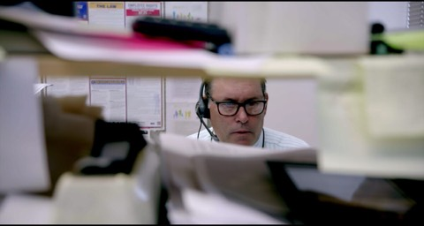

About the film
In THE PANAMA PAPERS, Alex Winter delivers a powerful, illuminating film that details the unprecedented coordination of more than 300 journalists who reveal the biggest global corruption scandal in history. The “Panama Papers” leak involved journalists from 107 media organizations in more than 80 countries who broke the story in 2015. The papers included over 11.5 million documents that detail financial and attorney-client information for nearly 214,500 offshore accounts. Winter includes interviews with whistleblowers and key journalists on the investigation, to tell the story of the massive data breach that uncovered murky political and financial corruption, bribes, election rigging and even murder.
At the festival
- 2018 Sunday, October 14, 2018 · 7:30 PM · Naval Heritage CenterPost-screening discussion with director Alex Winter.
More films on these topics
 The Black SwanMads Brügger2025 · 90 min
The Black SwanMads Brügger2025 · 90 min The Killing of a JournalistMatt Sarnecki2022 · 100 min
The Killing of a JournalistMatt Sarnecki2022 · 100 min A Leak in ParadiseDavid LeLoup2016 · 76 min
A Leak in ParadiseDavid LeLoup2016 · 76 min Deep WebAlex Winter2015 · 86 min
Deep WebAlex Winter2015 · 86 min The Sludge WarGalassia Grassetto2026 · 80 min
The Sludge WarGalassia Grassetto2026 · 80 min The Oligarch and the Art DealerAndreas Dalsgaard2026 · 120 min
The Oligarch and the Art DealerAndreas Dalsgaard2026 · 120 min